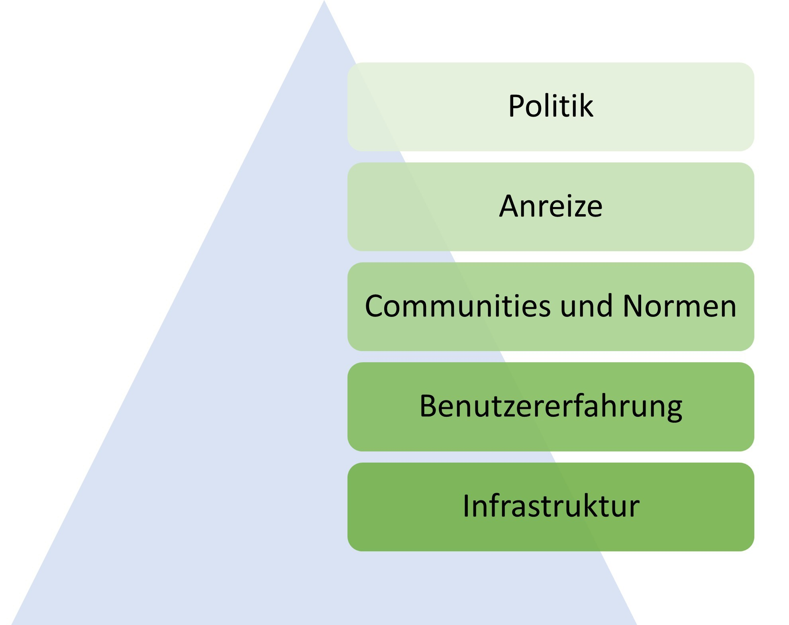

14 Das System
Fangen wir mit dem System an. Ansätze, die dort greifen bergen am meisten Potenzial, denn um im System Geld verdienen zu können, müssen Forschende sich an die Regeln halten. Und solange Publikationen die Währung sind und Paper mit knackigen Titeln und eindeutigen Ergebnissen als qualitativ hochwertiger befunden werden, sind Forschende darin motiviert, statt der Wahrheit eben nach knackigen Titeln und eindeutigen Ergebnissen zu suchen.
Allgemein ist eine positive Entwicklung sichtbar (Korbmacher et al. 2023) und eine Veränderung der Anreizstruktur wird anvisiert. Sie lässt sich als Angleichung des wissenschaftlichen Systems an die Mertonschen Normen (nach Robert Merton) auffassen (Merton 1973): (1) Kommunismus: Das wissenschaftliche Wissen sollte allen Wissenschaftler*innen gleichermaßen gehören, um die Zusammenarbeit zu fördern. (2) Universalismus: Wissenschaftliche Güte ist unabhängig vom soziopolitischen Status und persönlichen Attributen der Teilhabenden. (3) Desinteresse: Wissenschaftliche Institutionen handeln im Interesse der Wissenschaft und nicht für persönlichen Gewinn. (4) Organisierter Skeptizismus: Wissenschaftliche Behauptungen sollten einer kritischen Prüfung unterzogen werden bevor sie akzeptiert werden.
Nosek empfiehlt in einem Blogpost eine Maßnahmenstruktur, nach welcher die gewünschten Veränderung nacheinander …
- möglich (z.B. durch Infrastruktur wie online Repositorien, in denen Forschungsmaterialien öffentlich und gratis hochgeladen werden können),
- einfach (z.B. durch barrierearme Angebote, mehrsprachige Anleitungen),
- normativ (z.B. durch Wissenschaftliche Communities, die gemeinsam hinter Forderungen der Verbesserung stehen),
- belohnend (z.B. durch designierte Preise), und
- notwendig (z.B. durch Mindeststandards, die von Zeitschriften oder Drittmittelgebern gefordert werden)
gemacht werden sollen. Wie die verschiedenen Ansätze bei den verschiedenen Akteuren, also Politik, Universitäten, oder Zeitschriften konkret aussehen, wird im Folgenden diskutiert.

14.0.1 Politik
International stehen politische Parteien und Vereinigungen deutlich hinter Open Science und Open Access. Beispielsweise empfiehlt die UNESCO einen universellen Zugang zu wissenschaftlichen Wissen ungeachtet von Herkunftsland, Geschlechterrolle, politischen Grenzen, Ethnizität, oder ökonomischen oder technologischen Hürden (REF https://unesdoc.unesco.org/ark:/48223/pf0000374837, p. 3). Arbeitsgruppen für politische Instrumente, Förderung, und Infrastruktur wurden entsprechend gegründet (REF[LR2] ). Die G7 setzen sich für wissenschaftliche Integrität, akademische Freiheit, und Open Science ein (REF[LR3] ). Offener Zugang (REF[LR4] ) aber auch Transparenz des wissenschaftlichen Vorgehens (REF[LR5] ) wird auch seitens der Europäischen Union gefordert. Infrastruktur (z.B. die European Open Science Cloud) und diverse Open Science Forschungsprojekte werden gezielt gefördert. Für alle durch die EU geförderten Forschungsprojekte steht zudem die kostenlose Publikations- und Begutachtungs-Plattform Open Research Europe zur Verfügung.
In Deutschland hat sich die Regierung der Periode 2021-2025 im Rahmen des Koalitionsvertrages vorgenommen, „Open Access … als gemeinsamen Standard [zu] etablieren.” Einzelne Bundesländer wie Nordrhein-Westfalen haben in Zusammenschlüssen aus den jeweiligen Universitäten darüber hinaus Open Access Strategien entwickelt (REF[LR6] ) und arbeiten aktuell an Open Science Strategien. Andere Länder, wie zum Beispiel Schweden, haben bereits nationale Richtlinien zu Open Science entwickelt (https://www.kb.se/samverkan-och-utveckling/nytt-fran-kb/nyheter-samverkan-och-utveckling/2024-01-15-national-guidelines-for-promoting-open-science-in-sweden.html). Hinsichtlich der Problematik von Machtmissbrauch wird das Problem beispielsweise in einem Eckpunkte-Papier des Landes NRW anerkannt, doch als Einzelfall- statt System-Problem verstanden (REF[LR7] , für einen Kommentar siehe z.B. REF[LR8] ).
14.0.2 Universitäten[LR9]
Das Thema Open Science hat bei vielen Universitäten bereits Anklang gefunden. Während die meisten deutschen Universitäten (zeitlich begrenzte) Mittel für Open Access Publikationen haben, existieren an einigen darüber hinaus Open Science Policys (z.B. FAU Erlangen, https://oa-info.sh/2022/01/open-science-policy-der-uni-erlangen-nuernberg/), Open Science Centers (z.B. LMU Open Science Center, https://osf.io/smqpn; Köln Open Science Center; Münster Center for Open Science; Mannheim Open Science Office). Darüber hinaus unterstützen das Leibniz-Informationszentrum Wirtschaft in Kiel und das Leibniz-Institut für Psychologie Replikationsforschung beispielsweise mit einer Replikationszeitschrift (https://www.jcr-econ.org) oder im Rahmen einer Juniorprofessur für Psychologische Metawissenschaft. Eines der größten Zentren für Metawissenschaft innerhalb Europas hat sich in den Niederlanden in Tilburg gebildet. Die Berliner Universitäten haben eine gemeinsame Open Access Erklärung entwickelt (https://openaccess.mpg.de/Berliner-Erklaerung[LR10] ) und in Frankreich ist die Universität Sorbonne ein Pionier: Gemeinsam mit der Universität Amsterdam und dem Universitätscollege London wurde eine Erklärung über die die Veröffentlichung von Forschungsdaten unterzeichnet. XXX[LR11] . Seit 2024 hat die Universität Sorbonne darüber hinaus den Vertrag mit Clarivate für die Nutzung der Forschungsdatenbank „Web of Science” gekündigt und arbeitet seitdem mit der Open Source Software „OpenAlex” (REF[LR12] ).
Für die langfristige Entwicklung der Wissenschaften haben Universitäten dadurch eine besondere Verantwortung, dass sie Wissenschaftler*innen beschäftigen und an ihnen die Auswahl für die wenigen unbefristeten Arbeitsplätze in der Wissenschaft fallen. Wenn jahrzehntelang Professuren auf Basis subjektiver, nicht-reproduzierbarer, und für gute Wissenschaft nachrangigen Kriterien gewählt werden (z.B. Anzahl an Publikationen in Fachzeitschriften), kann sich das negativ auf die Entwicklung von Wissenschaften auswirken. Diesem Problem entgegenwirkend wurde ein Forschungspreis des Berlin Institute of Health (BIH), der jährlich für Projekte zur Förderung von wissenschaftlicher Integrität verliehen wird, an ein Projekt, das objektive und sinnvolle Auswahlkriterien für Professor*innen entwickelt vergeben (REF, REF[LR13] ). Innerhalb von Universitäten spielen außerdem die Bibliotheken eine aufklärerische Rolle hinsichtlich Forschungsdatenmanagement und Publikationskultur (REF, https://liberquarterly.eu/article/view/14947). Über sie kann der Forschungsprozess mit entsprechender Infrastruktur (z.B. zum Lagern und Veröffentlichen von Forschungsmaterialien und -ergebnissen) unterstützt werden (z.B. REF[LR14] ) und verhindert werden, dass sich eine „Abhängigkeit von wenigen kommerziellen Anbietern” ergibt, die „begrenzen, was [bei] der Forschung an Arbeitsmöglichkeiten und Fragestellungen erreichbar ist” (REF[LR15] ). Eine Pflicht, Mitglieder eine Universität zur Einhaltung von Open Science Strategien zu bewegen, gibt es an Universitäten durch den hohen Stellenwert der „Freiheit der Forschung” kaum. Damit könnten sie Gefahr laufen, für Forschende weniger attraktiv zu werden: Wenn beispielsweise auf namhafte Zeitschriften nicht mehr über die Universität zugegriffen werden kann, weil Verträge mit closed-access Zeitschriften gekündigt wurden, erschwert das den Forschenden die Arbeit. Beispielsweise klagte die juristische Fakultät der Universität Konstanz gegen eine Zweitveröffentlichungspflicht (REF[LR16] ): Forschende in Deutschland haben das Recht zur Zweitveröffentlichung, das heißt, dass sie ihre Forschung, wenn sie in einer Fachzeitschrift veröffentlicht wurde, auch selbst (z.B. über eigene Websites) veröffentlichen dürfen. In Konstanz konnten die Forschenden nicht dazu verpflichtet werden, davon Gebrauch zu machen.
Ein weiteres Stellrad von Universitäten ist die Bezuschussung von Publikationskosten bei Zeitschriften. Wird biespielsweise die wissenschaftliche Qualität einer Zeitschrift angezweifelt, kann eine Universität diese Bezuschussung stoppen (https://www.suub.uni-bremen.de/ueber-uns/neues-aus-der-suub/unter-kritischer-beobachtung-open-access-publikationen-im-mdpi-verlag).
Eine oft vernachlässigte Rolle kommt außerdem der universitären Lehre hinzu. Durch die Freiheit von Forschung und Lehre und bereits durchgeplanten Studiengängen gestaltet sich die Integration neuer Themen wie Open Science schwierig. Forschende, in deren Lehre die Thematik eine Rolle spielt, teilen proaktiv ihre Materialien, erstellen gemeinsam Curricula, und sind beispielsweise in großen internationalen Initiativen wie dem Framework for Open and Reproducible Research Training (FORRT.org) vernetzt (konkrete Vorschläge zur Integration von Open Science in die Lehre sind zum Beispiel hier erhältlich: REF[LR17] ).
14.0.3 Institute und Vereinigungen
Wissenschaftliche Gebiete leben vor allem durch Communities, also alle in dem Bereich forschenden Personen. Sie organisieren sich in Vereinen (z.B. Deutsche Gesellschaft für Psychologie), Interessensverbunden, oder ähnlichen Gemeinschaften. Eine besondere Stellung hat in Deutschland die Deutsche Forschungsgemeinschaft, welche staatlich und über die Bundesländer mit mehreren Milliarden Euro ausgestattet Forschungsgelder vergibt. Als eine der wichtigsten nationalen Institution hat ihre Open Science Positionierung einen hohen Stellenwert (REF[LR18] ), erfahrungsgemäß gehen Veränderungen jedoch nicht von der DFG aus, sondern die DFG wartet auf Anstöße aus den Fächern. DGPs[LR19] . In der Psychologie fördert darüber hinaus das ZPID die Infrastruktur durch Zeitschriften, Pre-Print Server, und weitere Methoden (REF[LR20] ) und in den Wirtschaftswissenschaften verwaltet das ZBW wichtige Informationen oder Zeitschriften (REF). Auch interdisziplinäre Vereinigungen wie das CERN (REF[LR21] ) oder internationale Akteure wie die American Psychological Association (REF[LR22] ) verpflichten sich zu Offenheit und Transparenz.
Im Rahmen der Open Science Reform entstanden außerdem viele neue Vereinigungen. Das interdisziplinäre und besonders von Wissenschaftler*innen in der frühen Karrierephase geleitete FORRT (REF[LR23] ) setzt sich für eine Verankerung von Open Science in der Lehre ein. Der Verbesserung psychologischer Forschung hat sich die Society for the Improvement of Psychological Science (SIPS) verschrieben. Sogenannte „grassroot”-Initiativen (also von jungen Wissenschaftler*innen ausgehende Bewegungen) haben sich an zahlreichen Universitäten herausgebildet und zu Netzwerken wie dem Netzwerk der Open Science Initiativen (NOSI) und „Reproducibility Networks” wie dem deutschen Netzwerk GRN (https://reproducibilitynetwork.de), dem im Vereinigten Königreich UKRN (https://www.ukrn.org) und weiteren zusammengeschlossen. Aber auch Zusammenschlüsse von Professor*innen zur Änderung von Kurzzeitverträgen existieren (z.B. Netzwerk Nachhaltige Wissenschaft, https://netzwerk-nachhaltige-wissenschaft.de).
14.0.4 Zeitschriften
Wissenschaftliche Zeitschriften gelten als Bühne des wissenschaftlichen Diskurses und bestimmen maßgeblich, welche Elemente des Forschungsprozesses zum „scientific record” gehören und damit relevant sind. Sie sind darüber hinaus als Organisatorinnen des Begutachtungsprozesses für die Qualitätssicherung in der Wissenschaft verantwortlich. Dem Mangel an Qualität entgegnend existieren bereits ausführliche Empfehlungen zur Gestaltung von Zeitschriften, es bilden sich neue Zeitschriften, und vollständige neue Begutachtungs- und Publikationsmodelle werden vorgeschlagen und vielseitig implementiert. Das Journal of Open Source Software (REF[LR24] ) basiert beispielsweise auf einem öffentlich einsehbaren Programmiercode (GIthub link REF, XXX[LR25] ) und seine Infrastruktur lässt sich für weitere Zeitschriften einfach kopieren und anpassen.
14.0.4.1 Empfehlungen
Herausgeber*innen, die sich in Bezug auf die von ihnen verwaltete Zeitschrift mit Open Science Praktiken auseinandersetzen möchten, können inzwischen auf einen umfangreichen Leitfaden zurückgreifen (REF[LR26] ). Über eine Diskussionsplattform (Journal Editors Discussion Interface, JEDI) wurden Vorschläge gesammelt und es wird erklärt, worum es sich bei Dingen wie Registered Reports, Open Peer Review, Diversifizierung, und Open Access handelt und wie diese in eine Zeitschrift implementiert werden können. Eventuelle Sorgen und Ängste werden angesprochen und beantwortet. Das Committee on Publication Ethics (COPE) setzt sich ebenfalls für Aufklärung und Lehre ein, die Herausgeber, Universitäten, und Forschungsinstitute im Umgang mit Problemen im Publikationssystem helfen soll. Es bietet beispielsweise Richtlinien unter welchen Umständen Publikationen zurückgezogen oder korrigiert werden sollten (https://publicationethics.org/retraction-guidelines), oder welche ethischen Standards ein Begutachtungsprozess erfüllen sollte (https://publicationethics.org/resources/guidelines/cope-ethical-guidelines-peer-reviewers). Herausgeber*innen, die Zeitschriften für kommerzielle Verlage verwalten und auf Systeme umsteigen möchten, die vollständig in der Hand der Forschenden liegen, können über Universitätsbibliotheken Hilfe bei der Migration von den kommerziellen zu offenen und kostenfreien Systemen erhalten und Zeitschriften beispielsweise mit dem Open Journal System verwalten (siehe z.B. OJS Netzwerk, https://ojs-de.net/start). Eine Datenbank mit bereits über 20,000 offen zugänglichen Zeitschriften verwaltet das Directory of Open Access Journals (DOAJ, https://doaj.org). Gutachter*innen von Forschungsartikeln können über die Reviewer Zero Initiative (https://www.reviewerzero.net) auf Lehrmaterialien und Leitfäden zugreifen (https://osf.io/e7z5k/wiki/Resources/).
14.0.4.2 Open Science Praktiken hervorheben
Aus der Psychologie ist lange bekannt, dass Motivation über Belohnung besser funktioniert als über Bestrafung (REF). Im Straßenverkehr, in dem es bis vor einiger Zeit nur Bestrafungen für Verletzen von Regeln gab, äußert sich die Erkenntnis beispielsweise an Geschwindigkeitstafeln, die den Autofahrer*innen beim Einhalten des Tempolimits einen fröhlichen Smiley zurückmelden. Wissenschaftliche Zeitschriften heben Einhaltung von Empfehlungen (z.B. öffentlich verfügbare Datensätze) mit Plaketten (Badges) hervor. Die Zeitschrift Psychological Science geht dabei seit 2024 so weit, dass Badges schon wieder abgeschafft werden und Open Science dort der Standard für alle Artikel ist. Auf der Website topfactor.org sind Zeitschriften und deren Einhaltung verschiedener Standards aufgelistet und in einer Rangliste abgebildet. Zuletzt besteht in jedem System mit Belohnungen das Problem, dass die Akteure ihr Verhalten auf die Belohnungen hin ausrichten und dabei versuchen, Abkürzungen zu gehen. XXX Badges können ge-“game”t werden: https://journals.sagepub.com/doi/10.1177/10731911241253430
14.0.4.3 Review Systeme
- „criteria related to consensus-building do not yet espouse sufficient reliability” https://www.researchgate.net/publication/380433173_Inter-Rater_Reliability_in_Assessing_the_Methodological_Quality_of_Research_Papers_in_Psychology aber es gibt Kriterienkataloge, die gut funktionieren
- PCI
- F100research.com: Mischung aus Zeitschrift und Pre-Print Server; Artikel ist sofort öffentlich verfügbar ab Einreichung und es steht dann dort, dass er under review ist
- Review-Ampel
- Open Peer Review
- Crowd peer review
o Wenig Beteiligung an offenem Review, Zeitschrift Synlett und ASAPbio: Koordinierung von Gruppe im Sinne eines Journal Clubs (=preprint review club), https://asapbio.org/crowd-preprint-review
- Review von negativen Zeitschriften: Infos via SIPS 2024 (Zoltan Kekecs SIPS Unconference, sehr spannende Ideen auch von Madhwa Galgali, Ekaterina Pronizius, Willemijn Plomp, Belay Weldemicheal)
o Aktuell „Open peer review” betrifft nur akzeptierte Papers; Meta-Wissenschaft über Peer Review wäre spannend
o Doppelarbeit und enorme Kosten https://link.springer.com/article/10.1186/s41073-021-00118-2
o Daten im Review mit anschauen und Zombie Papers: https://associationofanaesthetists-publications.onlinelibrary.wiley.com/doi/full/10.1111/anae.15263
§ Falsifizierte Daten wurden in Artikeln identifiziert, abgelehnt, aber dann woanders veröffentlict [LR27] hat;
§ „losing epistemic arms race”, „we are arming the opposite site” à feedback für abgelehnte Paper hilft Datenfälscher*innen
§ institutionelles Gedächtnis nötig; editorial notes / decisions sollten „für immer” an dem Artikel dranheften; dafür Versionierungssystem nötig, Namen von Beteiligten, Zeitschriften, usw.; Antwort auf Rejection sollte möglich sein
o Implementierung: automatisiertes System über editorial management Systeme; Möglichkeit für Embargo
o Mögliche Nachteile
§ Paper mit 5 Rejections sieht nicht so hübsch aus; evtl. akzeptieren manche Journals nichts, was bei „schlechten” Journals rejected wurde „death spiral”, Ankereffekte zwischen Reviews; evtl. nur Editors erlauben, alte Reviews zu sehen?
§ Reviewers orientieren sich evtl. aneinander
§ Nachteile für Reviewer (ich wurde negativ bewertet und nun stellt mich die Person nicht ein)
o Implementierung
§ Soziales Netzwerk für Reviews mit Ratings dafür wie hilfreich usw. Reviews sind
§ Pubpeer mit Anforderung, Papers als Pre-Print zu posten (keine Versionierung und nur mit Pre-Prints möglich)
§ Personality Science: Einreichung mit bisherigen Reviews
§ Über PCI (dort werden Reviews aktuell nicht veröffentlicht, wenn es negativ ausfällt)
- Post Publication Peer Review
o Pubpeer.com
o Hypothes.is (?)
o Disqus,
o aphaxiv.org
o https://scirev.org
14.0.4.4 Aufmerksamkeit zum Thema in bestehenden Zeitschriften
Anforderungen an wissenschaftliche Artikel seitens der Zeitschriften sind 2010 maßgeblichen Änderungen untergangen. In den Sozialwissenschaften orientieren sich zahlreiche Zeitschriften an den Richtlinien zur „Transparency and Openness Promotion” (TOP) und erhalten entsprechende TOP-Faktoren (https://topfactor.org/summary). Dabei wird festgehalten, welcher Grad an Offenheit und Transparenz von Forschungsdaten und -materialien gefordert wird und ob Replikationen bei der jeweiligen Zeitschrift veröffentlicht werden. Neue Herausgeber*innen bei existierenden Zeitschriften haben große Änderungen vorgenommen (z.B. Editorial psych bulletin, REF[LR28] ). Beispielsweise haben Hardwicke und Vazire (REF[LR29] ) für die Zeitschrift Psychological Science ein standardmäßiges Nachrechnen aller berichteten Ergebnisse ab 2024 angekündigt (REF), indem sie mit dem Institute for Replication zusammenarbeiten (https://i4replication.org). Vereinzelt haben Zeitschriften Spezialausgaben herausgegeben, bei denen der Fokus auf Replikationsstudien oder der Reproduzierbarkeit von Ergebnissen lag (https://imstat.org/publications/sts/sts_38_4/sts_38_4.pdf).
14.0.4.5 Zeitschriften für “nicht Innovatives”
Durch die Selektion spannender Ergebnisse gibt es für Forschung, die nicht bahnbrechend und dennoch höchst relevant ist, keine Plattform. Schätzungen zufolge werden bis zu 40% aller durchgeführten Studien innerhalb von 4 Jahren nach Durchführung nicht veröffentlicht (REF[LR30] ). Andere Forschende können nicht davon lernen und Ressourcen, die in die Sammlung und Auswertung der Daten geflossen sind, Zeit von Versuchspersonen, und lange Vorbereitungen der Forschung werden schließlich verschwendet. Zur Lösung dieses Problems haben sich neue Zeitschriften und Formate gebildet. In der Ökonomie hat sich auf Forderungen (REF[LR31] ) hin beispielsweise eine Zeitschrift für Replikationen und Kommentare gebildet (JCRE[LR32] ), die Zeitschrift Meta-Psychology bietet das Format des „Schubladenbericht” an. Dieses Format ist für Studien vorgesehen, die wegen wenig überraschenden Ergebnissen oder Fehlern in der Durchführung anderweitig in der Schublade landen würden. Ebenfalls zur Abbildung des für den Forschungsprozess typischen Fehlschlagens wurde das Journal of Trial and Error (LINK) gegründet, und bei ReScience C werden Berichte über Reproduzierbarkeit veröffentlicht (LINK).
14.0.4.6 Publikationsmodelle
Noch radikalere Vorschläge als die Anpassung bisheriger Zeitschriften ist der Vorschlag, das bisherige System durch ein neues zu ersetzen. Dabei handelt es sich um ein soziales Dilemma, bei dem Millionen von Forschenden sich plötzlich anders verhalten müssen und dabei entgegen der Spielregeln des wissenschaftlichen Systems handeln müssen (REF[LR33] ). Das Dilemma wurde von kommerziellen Verlagen gestaltet, welche daraus Geld verdienen. Brembs et al. (REF[LR34] ) haben einen präzisen Vorschlag erarbeitet, bei welchem ein dezentrales System aufgebaut wird, das soziale Netzwerke wie Mastodon als Vorbild hat, von Wissenschaftler*innen organisiert wird, und Forschungsprodukte wie Daten oder Programme ebenso wie die traditionellen Forschungsberichte wertschätzt. Plattformen, die ein solches Mikro-Publishing-System bereits implementieren sind Research-Equals (https://www.researchequals.com/) oder Octopus.ac (Hsing et al.). Dem System, bei dem alle Produkte begutachtet werden, der Begutachtungsprozess aber nicht die Qualität sicherstellt, stehen hier Ampel-Systeme und öffentliche Kommentierung entgegen, die signalisieren, was und ob begutachtet wurde, welche Kritikpunkte vorlagen, und wie damit umgegangen wurde.
14.0.5 Forschende
Unabhängig von Nationalität, Wissenschaftsgebiet, und Universität haben viele Forschende ihre Arbeitsweisen im Zuge von Open Science überdacht und angepasst. Hunderte haben öffentliche Erklärungen zur Forschungstransparenz (http://www.researchtransparency.org) und der Forderung von Open Science Praktiken in der Rolle von Gutachter*innen (https://www.opennessinitiative.org) unterzeichnet. Einzelne Forschende führen im Rahmen von Lehre Replikationsstudien durch (REF[LR35] , REF[LR36] ), schließen sich weltweit zusammen um gemeinsam Projekte durchzuführen, die einzelne nicht stämmen könnten (https://psysciacc.org), und entwickeln Sammlungen (https://docs.google.com/spreadsheets/d/1KUMSeq_Pzp4KveZ7pb5rddcssk1XBTiLHniD0d3nDqo/edit#gid=0, https://oercommons.org/hubs/OSKB), Leitfäden (REF https://osf.io/jfh3t/) und Glossare (REF[LR37] ) um den Zugang zu Open Science zu erleichtern. Eine noch unerfüllte Forderung ist die, Forschende das System über Zusammenschlüsse im Rahmen von Gewerkschaften zu reformieren (REF[LR38] ).
14.0.6 Bewertungskriterien
https://www.researchgate.net/publication/351638932_The_Natural_Selection_of_Good_Science
- Systematische Erarbeitung objektiver Kriterien
o https://psycharchives.org/en/item/dca8878a-1f6a-4599-abe0-16134b4b7f64
o https://osf.io/preprints/psyarxiv/5yexm
- Peer review guidelines https://www.researchgate.net/publication/375607348_Quantitative_manuscript_peer_review_template
https://psyarxiv.com/rgh5b/
https://psyarxiv.com/5yexm/
Alternative Auswahlkriterien für Professor*innen: https://osf.io/preprints/metaarxiv/juwck
Multilevel-Selektion: https://journals.sagepub.com/doi/pdf/10.1177/17456916231182568
https://tu-dresden.de/mn/psychologie/ifap/differentielle-psychologie/die-professur/Mitarbeiter/dipl-psych-anne-gaertner Einstein Award Thema (Auswahlkriterien)
Problem von Kriterien ist, dass sie oft Dinge jenseits des Mainstreams benachteiligen (REF[LR39] )
14.0.6.1 Alternativen zum Impact Factor
Altmetric für Einfluss jenseits von Publikationen (z.B. in sozialen Medien, Wikipedia, news outlets),
DORA: https://sfdora.org/read/read-the-declaration-deutsch/
COARA https://coara.eu Alternative Bewertungskriterien (qualitativ, nicht quantitativ; kann man signieren)
TOP guidelines
CiTO https://sparontologies.github.io/cito/current/cito.html
Free Lunch Index https://link.springer.com/article/10.1007/s11192-023-04862-8
Im Rahmen von XXX wurden Richtlinien zur Förderung von Transparenz und Offenheit in der Wissenschaft erstellt (Transparency and Opennness Promotion guidelines; kurz: TOP guidelines). Eine Zeit lang gaben manche Zeitschriften freiwillig an, welche Richtlinien wie eingehalten werden. Darin befindet sich zum Beispiel die Frage, ob mindestens eine Studie eines publizierten Artikels präregistriert sein muss, oder ob Datensätze veröffentlicht werden müssen. Je Aspekt (z.B. Öffentlichkeit der Daten) gibt es dann XX Levels: Das niedrigste Level 0 gibt an, dass es zu dem jeweiligen Aspekt keine Empfehlungen oder Vorschriften gibt. Das höchste Level 3 hingegen fordert, dass alle verwendeten Datensätze online verfügbar sind. [XXX genau anpassen an Vorgaben].
Seit 2022 lassen sich Zeitschriften, die TOP guidelines auf verschiedenen Levels umsetzen, in der topfactor.org Datenbank durchsuchen. Somit haben Forschende eine Alternative zum Impact Factor, die tatsächlich mit der Qualität der Zeitschrift zusammenhängt.
14.0.7 Infrastruktur (Open Infrastructure)
- ermöglichend
- NFDI
- Prinzipien: https://openscholarlyinfrastructure.org (übersetzen, einfügen, zitieren)
- Beispiele
o Wege, um Materialien, Daten, oder Ergebnisse
§ Literaturdatenbanken (OpenAlex)
§ (Data) Repositories, re3data.org; OSF.io
§ Pre-Print Server (arXiv), Zeitschriften, Zeitschriftensysteme (OJS)
§ Begutachtungssysteme (PCI)
§ Post-Publication Review
o Meta-Daten, um Verweise zu ermöglichen (ORCID-ID, ROR https://ror.org, DOI)
§ ORCID-ID Kritik: https://www.sciencedirect.com/science/article/pii/S0099133324000144?dgcid=rss_sd_all
- Übersicht: https://kumu.io/access2perspectives/open-science#disciplines/by-os-principle/open-infrastructure?focus=1 von https://access2perspectives.org/mapping-open-science-resources/
14.0.8 Open Access Publikationen
Typen von Open Access (siehe zenodo NRW AG Open Science Auflistung)
An manchen Orten gibt es ungeschriebene Gesetze wie “wenn du während deiner Promotion in einem hochrangigen Journal publizierst, wirst du die Bestnote kriegen”. Damit wird den sogenannten prestigereichen Zeitschriften immer mehr Macht zugeschoben. Leuten wird außerordentlich dafür gratuliert, dass sie etwas in Psychological Bulletin oder sogar Nature Human Behavior veröffentlicht haben. Dass niemand, der nicht mit einer Universität affiliiert ist (also an einer arbeitet oder studiert), den Artikel im Psychological Bulletin lesen kann, oder dass für die Veröffentlichung in Nature XXX Euro bezahlt wurden, spielt dabei keine Rolle. Leider sind genaue Regeln, wann welche Artikel von diesen Zeitschriften veröffentlicht werden intransparent. Auf den Seiten der Zeitschriften sind zwar üblicherweise Hinweise für Autor*innen und kurze Texte über die Zeitschrift, ob eine spezifische Studie genommen wird oder nicht, entscheiden zuerst alleine die Herausgeber*innen oder auf Englisch Editors. Zwischen zahlreichen Einreichungen müssen sie diejenigen auswählen, die an die Gutachtenden weitergeleitet werden.
Diesem intransparenten System stehen Open Access Zeitschriften entgegen. Obgleich ihr Kern die Öffentlichkeit aller Artikel ist, geht das Prinzip oft damit einher, dass die Ergebnisse des Gutachtenprozesses ebenfalls veröffentlicht werden.
- Guide
o https://psycharchives.org/en/item/4d0f12d8-a542-4cfd-b718-9ee7c9d11f5b
- Paywall umgehen
o Sci-hub: Schattenbibliothek, in der wissenschaftliche Zeitschriftenartikel gratis herunterladbar sind (https://de.wikipedia.org/wiki/Sci-Hub).
Daten über Sci-Hub: 2018 beinhaltete Sci-Hub fast 70% aller 81.6 Millionen wissenschaftlichen Artikel (https://doi.org/10.7554/eLife.32822?). Nutzungsstatistiken aus Deutschland von Strecker (2019) aufbereitet.
o 12ft.io
o #canihazpaper
o Autor*innen persönlich anschreiben (z.B. Mail, Researchgate.org, Academia.edu)
- Offene zeitschriften
o Directory of Open Access Journals: https://doaj.org
o Free Journal Network: https://freejournals.org/current-member-journals/
o Journals finden: https://service.tib.eu/bison/
o TOP Factor
- Predatory Publishers
o Bealls Liste, https://beallslist.net
o https://www.ncbi.nlm.nih.gov/pmc/articles/PMC5493177/
o https://thinkchecksubmit.org (oder bei Konferenzen: https://thinkcheckattend.org)
o White list: https://doaj.org
o Bei Bibliotheken nachfragen!
- Monitoring
o OpenAPC
o https://open-access-monitor.de
o https://hal.science/hal-04121339v2
o Offener Datensatz mit von AI kodierten Indikatoren von Open Science des Verlages PLOS: https://theplosblog.plos.org/2023/10/open-science-indicators-q2-2023/?utm_id=354&utm_source=internal&utm_medium=email&utm_campaign=354lib1023&utm_content=link
- Open Acces Typen
o (moving wall
o Green
o Gold
o diamond), siehe NRW OS Strategie https://zenodo.org/record/8322048 s. 11-12
o “guerilla open access” (sci-hub)
o
- Open Journals:
o OJS
o Directory of open access journals
- Offene Bücherei Badge: https://badge.openbiblio.eu
- DEAL Verträge mit Publishern: https://deal-konsortium.de/publizierende
- Bücher (Open Textbooks): https://content.iospress.com/articles/education-for-information/efi190260
- Editorial Mass Resignations
o Sprachwissenschaften: Linguista à Glossa (Johan Rooryck; Vortrag am 10.01.2024)
§ Herausgeber (Wissenschaftler) hat sich um Zeitschrift gekümmert, Elsevier Vertrag um Typesetting
§ Wissenschaftler*innen wollten Open Access Zeitschrift mit APCs, die transparent gemacht werden
§ 2015: 4 weitere Zeitschriften, die durch Community geleitet wurden, haben ebenfalls Diamond OA durchgesetzt
§ Unterstützung durch Bücherei und Open Library of Humanities
§ Eine vollständige Community wurde erfolgreich zu Diamond OA verschoben
§ Zeitschrift als Vehikel für eine wissenschaftliche Community – wie ein Auto, das von einer Familie gekauft wird: man lässt das alte zurück und nimmt das neue, Editors, Reviewers, Readers, sind alle dieselben Personen
§ Übergang zu OA ist schwierig
· Finanzielle Ungewissheit
· Impact Factors benachteiligen neue Journals, sind unabhängig von Content, Community, Mission Statement
· Alle Herausgeber*innen müssen zustimmen
· Montgomery & Neylon 2019: „The value of a journal is the community it cfreates, not the papers it publishes” REF[LR40]
· Was eine Zeitschrift nicht sein sollte X[LR41]
· Shared Ownership à Zeitschrift kann nicht an Verlag verkauft werden
· Content vs. Service: content controlled by academic community, technical services (publishing, typesetting) can be paid for
o Neuroimage (Chris Chambers)
§ Übergang zu OA 2020 mit APC (mehrere tausend Dollar)
§ Pandemie war zeitgleich, Community fand es nicht gut, hat es aber mitgemacht
§ Wegen großem Erfolg wurden APCs erhöht (3150$?)
§ Community hat viele Jahre hart gearbeitet und wird dann mit höheren Kosten bestraft, hat aber nichts von den Kosten
§ Chief Editor (Steve Smith) wollten Reduktion auf 2000$ verhandeln, Elsevier wollte das nicht: „Market Forces support the current APC” und fand die Kosten absolut berechtigt. Solche Kosten sind eine große Hürde für globalen Süden.
§ Editorial Board hatte genug und alle haben resigniert. 3 Journals: Neuroimage, Neuroimage reports, Neuroimage clinical à ~40 Leute, haben das koordiniert, um öffentliche Wirkung zu maximieren (mit Medien, sozialen Medien, haben mit non-profit Publisher gesprochen)
§ Kommerzielle Verlage sind Parasiten, fügen der Wissenschaft keinen Wert hinzu, existieren nur, um Profit aus Wissenschaft zu ziehen und geben den Wissenschaftler*innen fast nichts zurück (höchstens Typesetting)
§ Wichtige Message an alle: „from this point onwards, it is socially inacceptable to support these journals” “it’s important that we do this all together”
§ Die Zeitschriften nun so gut wie Tod à nicht einfach ein anderes Journal erstellen, sondern klar machen, dass der Name nichts bedeutet, sondern die Community
§ Und das reicht noch nicht: Mass Resignations sollten eher wöchentlich stattfinden, sind aber ziemlich selten; strong editor in chief ist nötig; wir brauchen auch gar keine Publisher (Peer Community In Initiative zeigt das)
§ Verlag (Elsevier) hat wohl versucht, öffentliche Kommunikation über EMR zu beeinflussen und versucht, Forschende einzuschüchtern
o Critical Public Health (Judith XXX)
§ Editorin hatte Moratorium für 1 Jahr, laut Vertrag durfte sie also 1 Jahr nach Ende des Vertrages Verbot, für eine Zeitschrift zu arbeiten
§ Verlag wollte Verträge ändern: statt „page budget” (5 issues pro Jahr mit vorgegebener Seitenzahl) „minimum number of papers” Modell; Editorial Board hatte dabei kein Mitspracherecht
§ Graduelle Erosion von akademischer Kontrolle
§ 2023: Board unilateral resigned (erstes Mal, dass sich alle einig waren)
§ https://cphn.net/breaking-news/
§ Journal of Critical Public Health neu gegründet, über OJS gehostet
§ Schwierigkeit:
· Netzwerk, dem das Journal gehört, musste formalisiert werden (bisher vor allem jiscmail Liste)
· Nachhaltigkeit ist schwierig langfristig mit diamond Open Access
· Keine Indizierung bisher (ISSN, IF, Abstracting)
· Legale Fragen zum Intellectual Property unklar und nicht geprüft: Die Community hat Submission Guidelines usw. geschrieben, Verlag (Taylor and Francis) behauptet nun, dass diese Texte dem Verlag gehören. Wissenschaftler*innen haben keine Kapazitäten für Gerichtsprozess.
o Neuropathologie: XXX à Free Neuropathology
o Verlage sind dagegen ausgestattet
§ Editorial Board wird rotiert, damit sich Editors nicht so stark vereinen können
§ Unwahrscheinliche Treffen in Person
§ Non-compete Klauseln / Moratorien
o Liste von EMR: https://retractionwatch.com/the-retraction-watch-mass-resignations-list/
o https://sparceurope.org/the-seed-of-a-global-federation-for-diamond-open-access-has-been-planted/
Eine besondere Form des öffentlichen Zugangs verbreitet sich aktuell in der biotechnologischen Forschung aus. Damit Wissenschaftler*innen, Ingenieur*innen, aber auch die allgemeine Bevölkerung Zugang zu Konstruktionen hat, wird dort zu Klemmbausteinen wie beispielsweise LEGO® Steinen [LR42] gegriffen (REF[LR43] ). So hat David Aguilar (Tabelle 1) beispielsweise einen prosthetischen Arm mit Klemmbausteinen entworfen.
14.0.9 Pre-Prints
- Stark angelehnt an Jonny Coates Vortrag (REF); recording sollte bald verfügbar sein über FZJülich
- Definition: noch nicht von einem journal ge peer reviewet
- In Corona-Pandemie viel Aufmerksamkeit erfahren von Forschenden, Politik, und Medien, weil Journals zu langsam sind (Veröffentlichungsprozess kann bis zu 10 Jahre dauern) https://www.biorxiv.org/content/10.1101/2020.05.22.111294v3
- Qualität genau so gut: https://pubmed.ncbi.nlm.nih.gov/36240832/
o Journals machen
- Pre-Prints von fast allen Journals gedulded (sherpa romeo v2)
- Können kommentiert werden, Probleme werden manchmal innerhalb von 2 Tagen aufgedeckt werden, statt mehreren Jahren https://www.statnews.com/2020/02/03/retraction-faulty-coronavirus-paper-good-moment-for-science/
o Retractions in Journals sehr sehr schwierig, bei Preprints einfach
o Retraction guidelines vom Committee on Publication Ethics (Barbour et al., 2019)
- Schneller: https://www.pnas.org/doi/10.1073/pnas.1511912112
- Alternatives Publishing Modell https://journals.plos.org/plosbiology/article?id=10.1371/journal.pbio.3000116
o Unabhängig von Publishern
o Open Access
o Schneller (https://europepmc.org/preprints)
o Open Peer Review, funktioniert gut https://asapbio.org/review-commons-9-months
o Kein Gatekeeping https://journals.plos.org/plosone/article?id=10.1371/journal.pone.0281659
o mit dem Modell wird experimentiert und geschaut, wie es funktioniert (Service zum Reviewen von Preprints: https://www.reviewcommons.org)
o Zitat J. Coates: „I don’t think that we need peer review” (REF, später nochmal prüfen oder ihn anschreiben, er müsste bald dazu was veröffentlichen)”
- Tracker: https://europepmc.org/preprints
- Preprints als Promotionsleistung statt veröffentlichte Paper
- Günstiger: APCs revenue bei Springer Nature fast 600 Gazillionen!!! APCs werden immer teurer https://direct.mit.edu/qss/article/doi/10.1162/qss_a_00272/118070/The-Oligopoly-s-Shift-to-Open-Access-How-the-Big
- in line mit EU Council calls und US government
- Sorge: dass jemand vor einem kommt und etwas irgendwo veröffentlicht
o Das geht auch bei Konferenzen schon immer, sogar bei veröffentlichten Papers
o Bei Pre-Print gibt es eine DOI + Zeitstempel und alle können sehen, wer zuerst da war
o Einige Zeitschriften prüfen auch schon, ob in einem Pre-Print was schon war
- “Put scientists back in charge”
- Institutionen, Funders, Reviewers: manche verpflichten schon, Preprints zu posten
- Je nach Feld sind Pre-Prints unterschiedlich beliebt
o Felder mit großer Sorge von Wissensdiebstahl möchten Forschung evtl. möglichst lange zurückhalten – nicht ganz sinnvoll, weil Reviewer auch Ideen klauen können und dann sogar schwieriger zu fassen sind; mit Pre-Print ist öffentlich klar, wer zuerst wozu geforscht hat
o In manchen Bereichen ist es nicht sinnvoll, wenn mehrere Forschende an derselben Sache arbeiten (z.B. zwei Forschungsgruppen können nicht gleichzeitig und unabhängig voneinander an einem bestimmten Ort archäologische Ausgrabungen machen)
14.0.10 Ansätze gegen die Selektion spannender Ergebnisse
Die Ergebnisse einer Untersuchung sind das, was am wenigsten in der Hand der forschenden Person liegt (bzw. liegen sollte - immerhin interessiert uns ja die Wahrheit und nicht die Kompetenz Forschender, Daten möglichst stark zu schönen). Umso frustrierender ist es, dass Zeitschriften das Ergebnis als Kriterium zur Publikation verwenden. Unter der Vielzahl von Einreichungen werden vor allem diejenigen Artikel gewählt, die spannende Ergebnisse erzielt haben oder die ihre anfängliche Vermutung bestätigen konnten (Confirmation Bias). Die folgenden Ansätze lösen dieses Problem zum Beispiel dadurch, dass die Ergebnisse aus dem Begutachtungsprozess ausgeschlossen werden.
14.0.10.1 Results-blind peer review
Der einfachste Weg ist dabei, den Ergebnisteil einfach zu schwärzen oder wegzulassen. Verschiedene Zeitschriften bieten das als Option an. Da es sich hierbei zurzeit (2024) eher um eine Ausnahme handelt, ist den meisten Gutachtenden jedoch klar, dass vor allem diejenigen die Option zum results-blind peer review wählen, deren Ergebnisse nicht “hübsch genug” für den klassischen Weg sind.
14.0.10.2 Registered Report
Ein radikalerer Ansatz als die Begutachtung ohne Ergebnisteil ist die Begutachtung des Artikels, ohne dass Ergebnisse überhaupt existieren. Dieses Format heißt Registered Report. Dabei wird das Manuskript mit der zu prüfenden Theorie, Methodik, und dem Analyseplan bei der Zeitschrift eingereicht, ohne dass überhaupt Daten erhoben wurden. Kommt es zur Akzeptanz dieses „halbfertigen” Artikels (in principle acceptance), werden die Daten gesammelt, wie geplant ausgewertet, und es folgt eine weitere Begutachtungsrunde. Hierbei ist vorgeschrieben, dass die Autor*innen nichts an den bereits verfassten Teilen verändern dürfen und die Gutachter*innen im Nachhinein keine Kritik am bereits geprüften Vorgehen üben dürfen. Es geht nur noch darum, ob der Plan eingehalten wurde und ob die Schlussfolgerungen auf den geplanten Analysen fußen. Damit soll verhindert werden, dass Artikel abgelehnt werden, weil die Ergebnisse nicht spannend genug, innovativ genug, oder den Erwartungen entsprechend sind. Erste Untersuchungen können bereits nachweisen, dass sich damit die Qualität der Forschung gegenüber dem traditionellen Vorgehen verbessert (REF[LR44] ). Eine Übersicht über Zeitschriften, die dieses Format anbieten ist online verfügbar (https://www.cos.io/initiatives/registered-reports à Participating Journals).[LR45] Ebenfalls wird dadurch deutlich, dass psychologische Forschung einem massiven Publikationsbias unterliegt (d.h. es werden vor allem Studien veröffentlicht, die ihre Vermutungen bestätigen konnten und kaum Studien, in denen das nicht geschah): REF [LR46] zeigten, dass der Anteil erwartungskonformer Ergebnisse bei Registered Reports mit 44% deutlich unter den in der Psychologie üblichen 96% liegt.
Abbildung 6
Klassisches Vorgehen beim Forschen und Veröffentlichen im Vergleich mit Registered Reports: Bei letzterem wird bereits der Studienplan (für gewöhnlich in Form eines unvollständigen Berichtes) begutachtet und revidiert. Eine Ablehnung im zweiten Peer Review aufgrund der Ergebnisse ist nicht möglich.
Anleitung (ten rules paper): https://journals.plos.org/ploscompbiol/article?id=10.1371/journal.pcbi.1010571
metaROR so wie PCI RR: https://easst.net/easst-review/easst-review-volume-421-july-2023/metaror-a-new-form-of-scholarly-publishing-and-peer-review-for-sts/
14.0.10.3 Pre-Print basierte Modelle
Durch die immer häufigere Veröffentlichung von Pre-Prints, also noch nicht begutachteten Manuskripten, eröffnen sich für die Begutachtung neue Wege. Sogenannte Overlay Journals (elife) wählen unter Pre-Prints solche aus, die sie an Gutachtende schicken um deren Meinungen einzuholen. Sofern die Autor*innen des Preprints einverstanden sind, erhalten sie dann Gutachten und ihr Artikel wird schließlich in der Zeitschrift veröffentlicht.
Ein Modell, das unabhängig von Zeitschriften arbeitet wird von Peer Community In (PCI) verwendet: Dabei werden Pre-Prints nicht zu Zeitschriften, sondern ohne Kosten zu einer PCI Initiative geschickt. Diese existieren für zahlreiche Fächer (z.B. XXX, XXX, XXX). Dort wird das Begutachtungsverfahren ähnlich wie bei klassischen Zeitschriften organisiert, nur statt am Ende im Idealfall eine Akzeptanz und eine Veröffentlichung gibt es von der PCI Initiative eine Empfehlung (Recommendation) und eine Veröffentlichung der Gutachten[LR47] . Gutachtende können selbst entscheiden, ob sie dabei anonym bleiben möchten. PCIs arbeiten mit fachspezifischen Zeitschriften zusammen. Sogenannte „PCI-friendly Journals” veröffentlichen dann die empfohlenen Pre-Prints ohne weitere Gutachten einzuholen. Dadurch sind sowohl der Mechanismus zur wissenschaftlichen Qualitätssicherung als auch der Selektionsmechanismus (was wird veröffentlicht) in den Händen der Forschenden. Dadurch, dass die Veröffentlichung in klassischen Zeitschriften als letzter Schritt optional ist, können sich wissenschaftliche Communities langfristig von Zeitschriften unabhängig machen. Ein Erklärvideo zu PCIs ist online verfügbar (https://www.youtube.com/watch?v=4PZhpnc8wwo). Die übergreifende Organisation ist nicht-kommerziell und wird seit ihrer Gründung 2017 von Forschenden geleitet (https://peercommunityin.org/pci-structure-history/). Eine spezifische PCI Initiative bezieht sich ausschließlich auf Registered Reports (PCI-RR).
Abbildung erstellen, die den Ablauf grob erklärt
Je nach Fach haben unterschiedlich viele Zeitschriften mit PCI Initiativen Vereinbarungen, dass sie die akzeptierten Artikel ohne eigenes Peer Review veröffentlichen. Mehr und vor allem bekannte teilnehmende Zeitschriften machen PCIs für Forschende attraktiver. Zeitschriften, die Interesse an einem PCI haben, aber die Begutachtung nicht aus der Hand geben möchten, können sich als „PCI interested Journals” listen lassen (vs. „PCI friendly journals”). Teilnehmende Zeitschriften sparen dadurch Arbeit und bleiben relevant, indem sich Ihre Funktion dahin verschiebt, dass sie thematisch relevante Forschung sammeln und disseminieren. In einem Fall hat bereits eine Zeitschrift, die als „PCI friendly” eine Vereinbarung mit PCI-RR hatte, ein Manuskript mit einer Recommendation zum erneuten Peer Review versendet und wurde sofort von den PCI Partnern entfernt. Forschende, die Gutachtenprozesse für PCIs organisieren möchten – analog zu Herausgeber*innen von klassischen Zeitschriften – können Recommender werden und müssen dazu ein Mindestmaß an Wissen haben sowie eine Schulung absolvieren (https://rr.peercommunityin.org/about/recommenders).
Tabelle 2
Zusammenfassung der verschiedenen Begutachtungsmodelle und der jeweiligen Art des Umgangs mit den Forschungsergebnissen
| Begutachtungsprozedur | Ausblendung der Ergebnisse |
| Traditionell | Ergebnisse sind sichtbar und fließen in die Beurteilung ein |
| Results-Blind Peer Review | Ergebnisse liegen vor, werden den Begutachtenden jedoch vorenthalten |
| Registered Report | Ergebnisse liegen noch nicht vor |
| Peer-Community-In Registered Report (PCI-RR) | Ergebnisse liegen noch nicht vor |
14.0.10.4 Open peer-review
So können Leser*innen von Meta-Psychology oder dem Journal of Open Psychology Data zu jedem Artikel einen Review Report (XXX richiges Wort? Link einfügen) lesen und nachvollziehen, was die Reviewer genau getan haben und wie sich der Artikel dadurch entwickelt hat. Vereinzelten Studien zufolge (REF, REF) führt das offene Review zu faireren und positiveren Einschätzungen.
XXX: Arten von Open Access einfügen - Gold – Diamond
Weitere Peer-Review Modelle
- https://reuse-dept.org Replikation in Computer Science
Review Ampel
Peer Review ist brutal. Das ist meine persönliche Erfahrung mit dem Prozess. Schnell habe ich in meiner wissenschaftlichen Arbeit gelernt, dass es in vielen Fällen ein Glücksspiel ist. Renommierte Wissenschaftler*innen erklärten mir, dass sie Artikel hätten, die sie über Jahre immer wieder bei Zeitschriften immer wieder eingereicht hätten, und die schließlich positiv aufgenommen worden wären, ohne, dass sie sie stark verändert hätten. Jenseits von der Akzeptanz eines Artikels zur Publikation geht es auch um die Gründe für die Ablehnung: Häufig lesen Gutachtende Artikel nicht aufmerksam und Kritiken sind nicht konstruktiv. Hierzu ein paar Beispiele:
Einreichung bei Collabra: Es handelte sich um einen Artikel, der zwischen den Disziplinen steht. Es geht nicht nur um Erwartungen, nicht nur um Produktbewertungen, nicht nur um die Methode, Daten direkt aus dem Internet herunterzuladen. Der “bunte-Vogel-Artikel” war bereits bei drei Zeitschriften abgelehnt worden. Bei keiner wurde er an die Reviewer weitergegeben, weil er nie zur Zeitschrift passte. Die Zeitschrift Collabra, bei der wir ihn schließlich einreichten, war zu dem Zeitpunkt noch wenige Jahre alt und war breit aufgestellt. Nach der Einreichung im Mai 2020 haben wir über ein halbes Jahr lang auf das Gutachten gewartet. Länger zu warten ist erstmal ein gutes Zeichen: Der Artikel wurde wohl an Reviewer rausgeschickt. In dem Fall wurden wir jedoch bitter enttäuscht: Im November 2020 erfuhren wir auf Nachfrage hin, dass 14 Gutachter*innen angefragt wurden, sodass die Herausgeberin auf Basis eines Gutachtens entschied, das Manuskript abzulehnen. Grund dafür war, dass die Methode aufgrund der inzidentellen Daten nicht geeignet für die Fragestellung war. In der Psychologie sowie den Wirtschaftswissenschaften ist das Problem mit “echten Daten” seit mehreren Jahrzehnten bekannt und wir hatten es bereits ausgiebig im Artikel diskutiert.
Einreichung bei Journal of Experimental Social Psychology: Wir hatten eine Replikation einer dort erschienen Studie durchgeführt - der Befund ließ sich nicht replizieren. Meine Überlegung war, der Zeitschrift, die den nicht robusten Befund ursprünglich publizierte, selbst die Chance zur Selbstkorrektur zu geben. Die Reviews waren fair und positiv, es gab ein paar Punkte zu diskutieren, aber uns war klar, dass es sich hier um Verständnisprobleme und keine inhaltlichen Aspekte handelte. Nicht so der Editor: Er erklärte, dass der Befund nicht neu genug wäre und klar wäre, dass es nicht replizierbar ist. Ich erklärte ihm, dass noch niemand den Befund zu replizieren versucht hatte und wir selbst sogar vor der Analyse der Ergebnisse eine Abstimmung darüber gemacht hatten, welches Ergebnis wir erwarteten: Es war sehr ausgewogen 50-50. Darüber hinaus, wurde ein weiterer Artikel publiziert, der entgegengesetzt Ergebnisse hatte. Wir stellten klar, dass wir alle aufgezeigten Probleme einfach lösen können und gerne die Chance zur Revidierung hätten. Der Editor hätte dabei kaum Arbeit außer den Artikel anschließend nochmal an Gutachtende zu schicken. Auf unsere Mail erhielten wir nur eine kurze Antwort: Hi. I know my decision is disappointing, but I’m going to stick with my decision on this one. Hier befand ich mich an einem Scheideweg: Warum ist ein Forscher nicht bereit, Gründe für eine wissenschaftliche Entscheidung zu erörtern? Wir entschieden uns, einen anderen Editor direkt zu kontaktieren. Nach kurzer Zeit erhielten wir die Einladung zu einer Revision. Der Artikel wurde schließlich in der revidierten Fassung veröffentlicht.
Einreichung bei European Journal of Personality: Die zentrale Aussage dieses Artikel war, dass verschiedene Messwerte einer angeblichen Eigenschaft nicht miteinander zusammenhängen. Der Befund stellte die Annahme infrage, dass es sich dabei überhaupt um eine Eigenschaft handelte. Die Ablehnungsgründe zweier Gutachtenden und der Herausgeberin machten deutlich: Niemand hatte den Artikel überhaupt gelesen. Ein Gutachter merkte an, dass etwas mit den Werten nicht stimme, weil sie laut einer der Tabellen nicht miteinander zusammenhängen. Genau das war ja unsere Aussage. Wir zeigten, dass es nich an unseren Daten lag, sondern sich in anderen Datensätzen so verhielt. Hätte er die Überschrift der Tabelle gelesen, den Absatz davor, oder den danach, wäre das klar geworden. Hat er aber nicht…
Das sind nur kurze Auszüge aus dutzenden Einreichungen und Ablehnungen. Darüber hinaus kann fast jede*r Forschende*r von substanzlosen persönliche Beleidigungen berichten. Meiner Erfahrung nach ist anonymes versus öffentliches Peer Review wie ein Vergleich von anonymen Kommentarspalten mit nicht anonymen: Bei Anonymität beherrschen persönliche Beleidigungen und Unwahrheiten den Dialog.
14.0.11 Open Science Incentives FORRT NOSI Badges Open Science in Berufungskommission
- N-best evaluation (REF[LR48] ): nur die z.B. N = 5 für die ausgeschriebene Stelle wichtigsten Publikationen werden berücksichtigt, statt auszuzählen werden diese dann ganz genau angeschaut
- StudySwap “However, a potential barrier to independent, prepublication replication attempts is that many researchers have a difficult time finding other labs to conduct such attempts. StudySwap can be used to find an independent research team to conduct a replication attempt of a not-yet-published study” (Chartier et al., 2018, p. 575). Zitat von: https://osf.io/preprints/psyarxiv/dtvs7/ p. 11
- Reviewer Initiativen und Boycotts
Richard D. Morey et al. (2016) The Peer Reviewers’ Openness Initiative: incentivizing open research practices through peer review, Royal Society Open Science; DOI: 10.1098/rsos.150547. Published 13 January 2016
14.0.12 Replikationsforschung[LR49] : Ansehen und Kompetenz (Normalität) im Umgang mit Replikationsstudien steigern
Unterscheidung Vertrauenskrise und Replikationskrise: https://philarchive.org/archive/FEEWRI
Replikationsstudien können keine Forschung ersetzen, die auf ein tieferes Verständnis von Theorien abzielt
Replizierbarkeit betrifft Robustheit, Mindestanforderungen an Verallgemeinerbarkeit, und Erhöhung des Vertrauens dadurch, dass QRPs und Datenfälschung weniger wahrscheinlich werden [was, wenn original- und replikations-studie gefälscht sind?]
Kein Schwarz-weiß-denken: Unsicherheiten sind mit Replikations- und Original-Studien verbunden https://journals.sagepub.com/doi/abs/10.1177/10755470241239947?journalCode=scxb
Es wird klar, was replizierbar sein sollte und was nicht. REF[LR50] listen notwendige [LR51] Bedingungen dafür auf, dass „wahre” Befunde replizierbar sein können
Wahre, statistische Phänomene können nicht replizierbar sein
Methode könnte sehr ungenau sein und trotz „wahrem” Befund nur eine sehr geringe Replikationsrate haben (mathematischer Beweis dafür bei https://royalsocietypublishing.org/doi/10.1098/rsos.200805#d1e454)
Mere-Measurement Effect
Ethnografie, qualitative Methoden, Archäologie („Befund wird bei Ausgrabung aus Kontext gerissen und dadurch zerstört”)
Sachen, die keine allgemeinen Gesetzmäßigkeiten darstellen können trotzdem replizierbar sein
Artefakte
Unpassende Modelle, deren Annahmen inkorrekt sind, lassen sich manchmal reproduzieren und mit neuen Daten auch replizieren
Heisenbug (?)
Replizierbarkeit ist nicht hinreichend für Wahrheit
Belief updating nach Replikationen https://www.nature.com/articles/s41562-021-01220-7
Ziele von Replikationen[LR52]
Niemand repliziert
https://www.econstor.eu/bitstream/10419/267931/1/I4R-DP013.pdf
tweet von gilad: https://twitter.com/giladfeldman/status/1735950123291779119
Geringes Ansehen verändert sich
Vor 10 Jahren: https://osf.io/preprints/psyarxiv/dtvs7/ p. 9 replications of Bem’s pre-cognition study were desk-rejected by the editor of JPSP, Eliot Smith, who stated “This journal does not publish replication studies, whether successful or unsuccessful” and “We don’t want to be the Journal of Bem Replication” (Aldhous, 2011).
Jetzt immer mehr Replikation als innovativ: “Defining replication as a confrontation of current theoretical expectations clarifies its important, exciting, and generative role in scientific progress.” https://journals.plos.org/plosbiology/article?id=10.1371/journal.pbio.3000691
Mehr Replikationen, aber zB in Soc Psych noch nicht Mainstream https://psycharchives.org/en/item/74463c10-7347-4bf2-8156-5618d42c4e93
Replikationen Initiative: https://i4replication.org/reports.html
https://openresearch.amsterdam/image/2018/1/15/20180115_replication_studies_web.pdf
Ruf nach Zeitschrift (https://s3.amazonaws.com/real.stlouisfed.org/wp/2015/2015-016.pdf) erhört (JCRe)
Diskussionen sind zum Teil noch hart und Replikationsstudien werden falsch dargestellt https://osf.io/96pnj
Arten von Replikationsprojekten
Registered Repots /PCI-RR (steht dazu s chon woanders etwas? Ist ja nicht explizit für replikationen)
Abschlussarbeiten für Replikationen nutzen:
Studierende als Replizierende: https://link.springer.com/article/10.1007/s12286-023-00578-4
Hagen Cumulative Science Project:
https://journals.sagepub.com/doi/10.1177/1475725719868149Gilad Feldmans Projekte CORE https://osf.io/5z4a8/
§ Leipziger Replikationsstudien: https://home.uni-leipzig.de/lerep/
§ CREP https://www.frontiersin.org/articles/10.3389/fpsyg.2019.00247/full
§ Laufende Großprojekte
§ I4R und Replication Games: https://www.nature.com/articles/s41562-023-01807-2
§ ZWB Lab²
§ Beteiligung von Original-Autor*innen
§ https://osf.io/preprints/psyarxiv/dwg9v
Veröffentlichung von Replikationen
Vorschlag: jede Zeitschrift ist zuständig für Replizierbarkeit eigener Studien und MUSS Replikationsversuche veröffentlichen; pottery barn rule https://thehardestscience.com/2012/09/27/a-pottery-barn-rule-for-scientific-journals/
Neue Journals
Replikationen Journal: https://www.jcr-econ.org
Reproducibility in Neuroscience: https://jrn.epistemehealth.com/about/editorialteam/
Journal of Trial and Error https://trialanderror.org
http://rescience.org/x Replication Journals
Datenbanken für Replikationen
Göttingen Replication Wiki https://replication.uni-goettingen.de/wiki/index.php/Special:FormEdit/New_Replication or https://blog.repec.org/2020/08/04/a-replication-database-for-economics-and-social-sciences-the-replicationwiki/ (Jan H. Höffler) https://doi.org/10.1045/march2017-hoeffler
CurateScience.org
FORRT Replications and Reversals
Replication Database (ReD)
Auffinden von Replikationen: https://arxiv.org/pdf/2311.15055.pdf
Ressourcen zum Lernen über Replikationen
Review über Replikationen in quantitativer Soziologie: https://www.annualreviews.org/doi/10.1146/annurev-soc-060116-053450
Wiki für Studierende / Webinar in Göttingen: https://replication.uni-goettingen.de/wiki/index.php/Webinar_series:_Replicating_empirical_studies_in_economics_-_an_opportunity_for_students Replication Wiki
Replikationsmethodologie weiterentwickelt
Terminologie wie am Anfang vorgestellt (Hüffmeier, Paper zu Generalizability von dem akademischen Rat aus Bamberg [evolutionsbiologie])
Small telescopes approach
Bayesian sample size planning https://www.researchgate.net/publication/373047996_Bayesian_approaches_to_designing_replication_studies
https://link.springer.com/article/10.1007/s11749-023-00916-4Selection of replication studies https://www.sciencedirect.com/science/article/pii/S0010945223002691
Empfehlungen, wie Autor*innen von Replikationsstudien mit den Originalautor*innen kommunizieren sollten: https://doi.org/10.1017/S1049096520000943
Kriterien für Bewertung: https://docs.google.com/document/d/1p7GeOpwzQyTuzAWsD1w3zql2dS6mFgEhdf38Lc3uXC4/edit#heading=h.oti7bgwflneo
Problem beim Updaten von Materialien: wenn original, dann veraltet und unpassend – wenn neu, dann anders und unpassend; siehe auch Kommentar von John Protzko https://rr.peercommunityin.org/PCIRegisteredReports/articles/rec?id=750
Identifikation probleamtischer Forschungsliteratur: Original Replication of Meta-Analyses or ORMA https://www.researchgate.net/publication/365057816_ORMA_A_strategy_to_reduce_Psychology’s_replication_problems
§ Qualitative Forschung profitiert evtl. nicht von Replikationen https://open.lnu.se/index.php/metapsychology/article/view/3764
KASTEN / Leitfaden: Eine Replikationsstudie durchführen
1. Wahl der Studie
· Wichtigkeit der Originalstudie (Grundlegend, evtl. erkennbar durch viele Zitationen)
· Ungewissheit der Originalstudie (Replikationswahrscheinlichkeit möglichst nicht 0 oder 1)
· Bisher noch keine Replikationen
· Diskussionen dazu beachten (z.B. via hypothes.is oder pubpeer.com à auf pubpeer.com Paper suchen und schauen, ob es dazu Kommentare gibt)
· Machbarkeit (online möglich? Querschnitt? Instrumente Verfügbar bzw. bezahlbar?)
· Etablierte Replikationsstandards für den Bereich? (bei FMRI Daten oder Längsschnittanalysen schwieriger als bei einfachen F- oder t-Tests)
· Zusatz: Meta-analytische Indikatoren: auffällige P-Curve/Z-Curve, klare Hinweise auf Publikationsbias oder QRP
2. Durchführung
· Bestandsaufnahme der veröffentlichten Materialien und Daten
· Daten berechnen
· Bei verfügbaren Daten: komputationale Reproduzierbarkeit prüfen
· Bei fehlenden Teststatistiken diese ausrechnen
· Bei fehlenden Werten zu allem möglichen, evtl. andere Studien hinzuziehen
· Kontaktaufnahme zu Originalautor*innen, wenn möglich
· Stichprobenplanung: nicht den Originalstichprobenumfang nehmen, sondern Poweranalyse-Ansätze nutzen
· Small-Telescopes-Approach
· Untere KI-Grenze
· Äquivalenztests
· Anpassung der Methode
· Ggf. Update veralteter Materialien
· Übersetzung in andere Sprache
· Notwendigkeit einer besonderen Stichprobe?
· Gibt es etablierte Standards bezüglich des statistischen Tests (v.a. bei standardisierten Effektstärken [r, d, f], nicht bei komplexen Verfahren wie RSA, Clustering, Decision Trees, FMRI Daten)
· Gibt es ähnliche Replikationsstudien in dem Bereich, die für die Methode herangezogen werden können (z.B. via Replication Database suchen)
· Anpassungen
· Qualitätssicherung: Welche Veränderungen sind nötig oder sinnvoll? Was wissen wir neues, was wir berücksichtigen sollten?
· Extensions: Lassen sich zusätzliche Items o.ä. „hinten” an die Studie anhängen, womit sich die externe Validität erhöhen könnte? Gibt es zusätzliche einfache Ergänzungen, bei denen eine Replikation nicht zu erwarten ist?
· Präregistrierung mittels Template (Empfehlung: Replication Recipe, Brandt et al., 2014 http://dx.doi.org/10.1016/j.jesp.2013.10.005
· Ggf. als PCI-RR submitten
3. Analyse
· Berechnung der Ergebnisse
· Vergleich Original vs. Replikation
· Vergleich naher vs. „ferner” Ergebnisse (z.B. bei denselben Items vs. Bei Extension [falls vorhanden]
4. Diskussion
· Bewertung des Ergebnis
· LeBel Kriterien (signal/no signal + size)
· Umgangssprache (success, failure, practical failure, inconclusive)
· Abweichungen von Präregistrierung (jeweils Beschreibung, Begründung, und Auswirkung auf Ergebnisse)
· Abweichung von Originalstudie (jeweils Beschreibung, Begründung, und ob es die Ähnlichkeit der Ergebnisse hätte beeinflussen können)
· Bei anderen Ergebnissen Originalautor*innen um Kommentar bitten
5. Bericht
· Manuskript: Orientierung an state-of-the Art von Gilad Feldman (LINK/REF) und an I4R Replication Report Template (https://osf.io/j2qrx)
· Eintragung in Replication Database (via Fragebogen oder StaRT)
· Registrierung der Ergebnisse über Replication Recipe („post completion”)
· Ggf. Verweis auf Replikationsstudie unter der Originalstudie bei pubpeer.com
· Preprint: auf passendem Server hochladen
· Zeitschrift: Originalzeitschrift (meistens kein Interesse), Collabra: Psychology, PCI (wenn es eins gibt), Meta-Psychology (designierte Section für Replikationen); Hinweise zu Zeitschriften hier: https://i4replication.org/publishing.html
14.0.13 Modellierung von Replizierbarkeit
Alle Studien in einem Wissenschaftsbereich zu replizieren ist aktuell unrealistisch und würde enorme Ressourcen benötigen. Daher befinden sich verschiedene Methoden in Entwicklung, um auf Basis von Eigenschaften einer Studie vorherzusagen, welche Replikationsergebnis zu erwarten ist. Im repliCATS Projekt (REF[LR53] ), das Teil des SCORE Projektes zur Messung wissenschaftlicher Qualität ist, werden Einschätzungen von Forschenden, Reproduktionsversuche, und Replikationsversuche kombiniert. Ähnliche Projekte verwenden komplexe statistische Modelle (z.B. Large-Language-Models) oder meta-analytische Methoden wie p-curve oder Z-curve zur Vorhersage von Replikationsraten. Solche Modelle benötigen üblicherweise sehr viele Beobachtungen und Vorhersagen sind nur auf der Ebene von hunderten Studien sinnvoll. Beispielsweise rechneten Boyce et al. 2023 und Hagen Cumulative Science project Moderationsanalysen, prüften also welche Eigenschaften von Studien sich auf das Replikationsergebnis auswirken (z.B. Wechsel von Studie im Labor zu Online-Studie). Mittels umfassender Datenbanken wie der FORRT Replication Database können in Zukunft präzisere Modelle erstellt werden. Aktuelle Ergebnisse sind als vorläufig und mit Vorsicht zu interpretieren, da sie auf nicht-zufälligen Stichproben basieren, die Studieneigenschaften nicht systematisch und zufällig variiert wurden, und Replikationen solcher meta-analytischen Befunde schwierig sind.
14.0.14 Veröffentlichung aller Ergebnisse
- https://opentrials.net/about/
- Unveröffentlichte Medizinische Studien: Quest Dashboard: https://quest-cttd.bihealth.org/#tabStart
- File drawer reports
o Meta psychology
o psychfiledrawer.org meta-psychology
- Datenbanken, die auch unveröffentlichte Ergebnisse aufnehmen (auch Lösung für cumulative science)
o Bodypositions, OpAQ Community Augmented: metalab.stanford, metabus, https://camarades.shinyapps.io/AD-SOLES/ , …
o Replication database
o Metapsy https://www.metapsy.org
o Metalab stanford https://langcog.github.io/metalab/
| Name[LR54] | Link | Topics | ||||
| MetaLab | langcog.github.io/metalab | Early Language, Cognitive Development | ||||
| metaBUS | metabus.org | All of social sciences | ||||
| SOLES | camarades.shinyapps.io/AD-SOLES/ | Animal models of Alzheimer’s disease | ||||
| OpAQ | t1p.de/openanchoring | Anchoring Effects | ||||
| FReD | t1p.de/ReD | Replications (all fields) | ||||
| Power Posing | metaanalyses.shinyapps.io/bodypositions | Body Position Effects | ||||
| Metadataset | metadataset.com | Agriculture | ||||
| METAPSY | https://www.metapsy.org | Psychotherapy | ||||
Anleitungen:
metaUI: https://github.com/lukaswallrich/metaui
Dynameta: https://github.com/gls21/Dynameta
Materialien: https://cama.psychopen.eu
- Journal of Articles in Support of the Null Hypothesis
- Journal of Negative Results https://www.jnr-eeb.org/index.php/jnr/about
14.0.15 Umgang mit Fehlern
- Fehlerkultur
- Retraction
o Standardisierte Retraction Notes: https://www.researchgate.net/publication/374082265_A_tale_of_three_retractions_a_call_for_standardized_categorization_and_criteria_in_retraction_statements
o Wissenschaftliche Fehler können extreme Folgen haben; Lancet MMR Autism Fraud https://www.ncbi.nlm.nih.gov/pmc/articles/PMC2831678/
o Einige Wissenschaftler*innen prüfen große Mengen an Artikeln, Elisabeth Bik z.B. hat zu Retractions von fast 600 und Korrekturen von fast 500 Artikeln beigetragen (https://www.buzzfeednews.com/article/stephaniemlee/elisabeth-bik-didier-raoult-hydroxychloroquine-study)
o Aktuell Studie zur Sichtbarkeit von Retractions mit Möglichkeit, sich über zurückgezogene Artikel, die man zitiert, informieren zu lassen (RetractoBot, https://www.retracted.net) vom Bennett Institute for Applied Data Science at the University of Oxford.
- Pubpeer.com
o Beispiel einer Diskussion eines Papers vom Nobelpreisträger Thomas Südhof https://pubpeer.com/publications/DAF32F6DB6C166337E5381F769AE52#1
o Hohe Aufmerksamkeit führt zu Korrektur vieler Fehler, zum Beispiel von 12 Fehlern (Stand: Dezember 2023) im Südhof Lab (https://med.stanford.edu/sudhoflab/science-resources/integrity---pubpeer.html)
- Error project (malte elson)
14.0.16 Offene Lehre / Open Teaching / Open Educational Resources
- Repositorien für Bildungs- und Lehrmaterialien (Beispiele u.a. von https://leibniz-psychology.org/practices-and-tools-of-open-science/open-science-in-der-lehre)
o https://www.twillo.de/oer/web/
o Osf.io
o https://forrt.org/syllabus/ (spezifisch open science)
- Offene Webinare, zB zu Replikationsforschung https://acm-rep.github.io/2024/posters/ACM_REP24_paper_30.pdf
- Anleitungen und Glossare (Parsons et al., 2022) zum Beispiel wundervoll gesammelt bei FORRT.org
- Open Scholarship Knowledge Base (OSKB)
- ROSiE[LR55] Knowledge Hub
- Open Economics Guide https://openeconomics.zbw.eu/en/
- ARIADNE
[LR1]REF
[LR2]https://opusproject.eu/openscience-news/open-science-horizon-unescos-recommendation/
- [LR3]https://www8.cao.go.jp/cstp/kokusaiteki/g7_2023/2023_bestpracticepaper.pdf
[LR4]https://www.consilium.europa.eu/en/press/press-releases/2023/05/23/council-calls-for-transparent-equitable-and-open-access-to-scholarly-publications/
[LR5]https://www.ema.europa.eu/en/documents/regulatory-procedural-guideline/triggers-audits-good-laboratory-practice-glp-studies_en.pdf
[LR6]https://zenodo.org/record/8322048
[LR7]https://opal.landtag.nrw.de/portal/WWW/dokumentenarchiv/Dokument/MMV18-2422.pdf
[LR8]https://www.jmwiarda.de/https-www.jmwiarda.de-2024-05-28-bitte-nachschaerfen/
[LR9]Erhöhung der Offenheit an finnischen Universitäten https://www.zbw-mediatalk.eu/de/2024/02/open-science-monitoring-offenheit-als-wichtiger-teil-guter-forschungspraxis-in-finnland/
Netzwerk Nachhaltige Wissenschaft
https://zenodo.org/records/11204833
[LR10]Das zu Universitäten?
[LR11]Worum geht es dabei genau?
[LR12]https://arxiv.org/abs/2205.01833
[LR13]schönbrodt research practices I und II
[LR14]https://www.cambridge.org/core/books/abs/data-science-in-the-library/toward-reproducibility-academic-libraries-and-open-science/6FB18D7BCD8B82E597ED0D4B390C72EE
[LR15]https://www.degruyter.com/document/doi/10.1515/bfp-2024-0008/html
[LR16]https://de.wikipedia.org/wiki/Zweitveröffentlichung
[LR17]https://doi.org/10.31234/osf.io/prx8w
[LR18]https://zenodo.org/records/7193838
[LR19]ergänzen, Gesellschaft für Wirtschaftswissenschaften?
o [LR20]Public Open Science Institut für die Psychologie (ZPID)
[LR21]https://openscience.cern
o [LR22]https://www.apa.org/pubs/journals/resources/publishing-tips/transparency-openness-promotion-guidelines?utm_campaign=apa_publishing&utm_medium=direct_email&utm_source=businessdevelopment&utm_content=openscience_promo_11302023&utm_term=text_middle_learnmore
[LR25]erklären
[LR26]https://www.researchgate.net/publication/372509504_A_Guide_for_Social_Science_Journal_Editors_on_Easing_into_Open_Science
[LR27]Idee: Review als Kommentar bei Pubpeer posten bei Ablehnung
[LR28]https://doi.org/10.1177/09567976231221573
[LR29]https://doi.org/10.1177/09567976231221573
[LR30]https://osf.io/preprints/psyarxiv/5hkjz
[LR31]https://s3.amazonaws.com/real.stlouisfed.org/wp/2015/2015-016.pdf
[LR32]link
[LR33]https://royalsocietypublishing.org/doi/10.1098/rsos.230206
[LR34]https://royalsocietypublishing.org/doi/10.1098/rsos.230206
[LR35]boyce 2023 eleven years
[LR36]hagen cumulative science project
[LR37]forrt glossary
[LR38]https://osf.io/preprints/psyarxiv/bkxfq
[LR39]https://open.lnu.se/index.php/metapsychology/article/view/3764
[LR40]https://blogs.lse.ac.uk/impactofsocialsciences/2019/03/29/the-value-of-a-journal-is-the-community-it-creates-not-the-papers-it-publishes/
[LR42]Hier Bild von Lego-Steinen einfügen (selbst schießen)
[LR43]https://doi.org/10.1016/j.tibtech.2022.02.003
[LR44]https://osf.io/preprints/metaarxiv/7x9vy
[LR45]ergänzen:
[LR46]https://journals.sagepub.com/doi/10.1177/25152459211007467
[LR47]Irgendwo diskutieren, warum negative gutachten nicht veröffentlicht werden
[LR48]https://osf.io/preprints/psyarxiv/tzaqh
[LR49]hier nochmal durchschauen: https://lakens.github.io/statistical_inferences/17-replication.html#analyzing-replication-studies
und
https://pubmed.ncbi.nlm.nih.gov/26214497/
[LR50]https://royalsocietypublishing.org/doi/10.1098/rsos.200805#d1e454
[LR51]Kasten: Begriffserklärung für Notwendige und hinreichende Bedingungen
[LR52]Fletcher (2020) describes the function of replication is to confirm one of the following claims regarding the findings of the original research: (1) they are not due to mistakes in data analysis, (2) they are not due to sampling error, (3) they do not depend on contextual factors, (4) they do not arise from fraud or questionable research practices, (5) they generalize to a larger population than that sampled in the original, (6) their aspects pertaining to the theoretical hypothesis of interest hold even when that hypothesis is operationalized or tested in completely different ways
https://cornerstone.lib.mnsu.edu/cgi/viewcontent.cgi?article=2424&context=etds
[LR53]https://www.youtube.com/watch?v=qa2_9NrEmeA
[LR54]aktualisieren (siehe ppt)
[LR55]https://rosie-project.eu/knowledge-hub/#!training/health-and-life-sciences